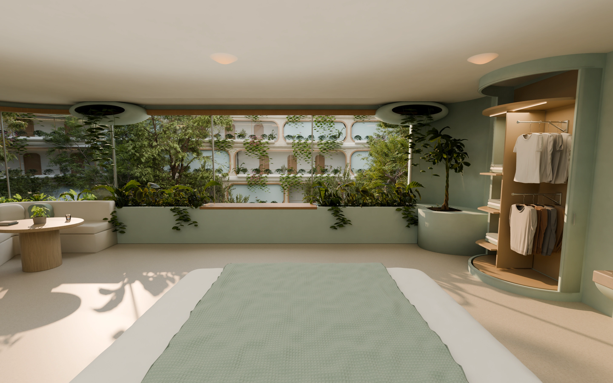

An immersive experience of the novel, The Visitor, told chapter by chapter.
Welcome to “The Visitor” immersive experience. You will be waking up with our main character to explore his surroundings from his perspective. For now, his legs have atrophied, so you can only swivel to inspect your surroundings.
Enable motion to tilt your phone to look around the room, or use arrows and swiping to do the same.
You can also swipe to look around. Tap Centre to return to the bed view.
Set up phone motion ↗The room could not finish loading.
Headphones welcome. Move at your own pace.
Let your eyes adjust…